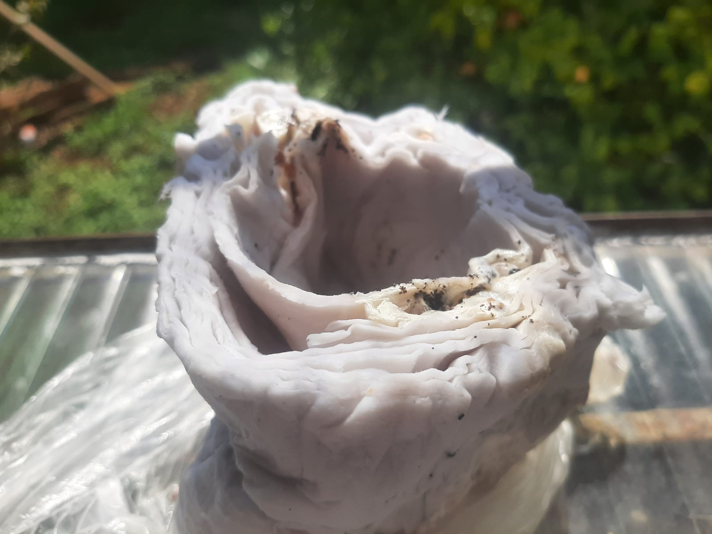

O shimeji vai colonizar e comer a palhada depositada no composto até que ela ficará branca. Depois, é preciso manter o saco em uma temperatura entre 25°C e 30°C e em baixa luminosidade, com o substrato protegido por lonas, para esquentar o ambiente.
Embrulhe-os em papel toalha, para mantê-los sempre secos e prolongar a durabilidade
Eles não podem fabricar seus próprios alimentos e, por isso, usam a energia do sol, e conseguem seus alimentos de materiais orgânicos encontrados em tecidos vivos ou mortos de plantas e animais
